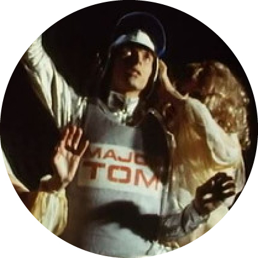

Major Tom

In "Space Oddity", from the album David Bowie (1969, later retitled Space Oddity), Major Tom's departure from Earth is successful and everything goes according to plan. At a certain point during the travel ('past one hundred thousand miles'), he claims that "he feels very still" and thinks that "my spaceship knows which way to go" and proceeds to say "Tell my wife I love her very much." Control then informs him, "Ground Control to Major Tom: your circuit's dead, there's something wrong" and attempts to reestablish contact with Major Tom. Tom's final words in the song (possibly not heard by Ground Control) are: "Here am I floating 'round my tin can, far above the moon. Planet Earth is blue, and there's nothing I can do."
In the promotional film from 1969, David Bowie plays as Major Tom, Ground Control (GC), and the Countdown Announcer. When the lyrics "And the stars look very different today" are said, two lovely women appear, portraying either angels or aliens, or perhaps both. The moment "Though I'm past one hundred thousand miles, I'm feeling very still" are said, the two women can be seen removing Major Tom's helmet and spacesuit. Later a still fully outfitted Major Tom can be seen spinning around in space, with a panicked Ground Control attempting to contact him; the spinning Major Tom is either the reality of the situation, or Ground Control's imagination. The music video ends with Major Tom sitting in his tin can, far above the world, with the two women by his side in a ménage à trois style.
Bowie created a sequel entitled "Ashes to Ashes" (1980). The song, which peaked at Number 1 in the UK music charts and had a respectable showing in other international music charts, was featured on his LP Scary Monsters (And Super Creeps). The song actually says little about Major Tom, except to call him a "junkie," slang for a person with a heroin addiction or other compulsive habit. The context of the lyrics seems to indicate that the song is mainly about Bowie's own soul searching, rather than a literal continuation of the Major Tom story. There is an inclusion saying "strung out in heaven's high, hitting an all time low" referring to him getting high on cocaine, while his life is low. Given Bowie's own history of drug problems, it is quite possible that the "Major Tom" line could also be autobiographical.
Alternatively, the song can be interpreted to provide detailed information on Tom's story. The song refers an event happening much later, after "Space Oddity." Ground control receives a message from the "Action Man," referring to Tom, and he says "I've loved all I've needed to love. Sordid details following...". He talks about how the shrieking of nothing is killing him, how all he has are his pictures of women to keep him company, and how he now has neither money nor hair. He wants to kick the habit but the planet is "glowing;" essentially he cannot quit whatever is influencing him—and killing him—because the feeling is too pleasurable and addictive. The exact source of the influence is not defined. The later verses seem to reflect more on Bowie's literal battle with addiction, specifically about wanting to stay clean but being stuck with a "valuable friend." The song again refers directly to Tom toward the end, where he has become more of a legend, but not for his heroics. He has become a nursery rhyme in the minds of the public, with mothers warning against drug use by telling their children if they want "to get things done, you'd better not mess with Major Tom."
Bowie released a song entitled "Hallo Spaceboy" on his album Outside (1995). While this song itself does not directly reference Major Tom, references to Major Tom do appear in the remixed version that Bowie released with the Pet Shop Boys in 1996. This remix contains lyrics from "Space Oddity" that are sung by Pet Shop Boys vocalist Neil Tennant.
Although never mentioned in the song, an astronaut, possibly Major Tom, does make an appearance in the music video for the song "Slow Burn" on Bowie's 2002 album Heathen.
In the music video of Bowie's 2015 song "Blackstar" (on the album of the same name, released in 2016 two days prior to the artist's death), a dead astronaut is depicted. His skull is retrieved by an alien female who takes it back to what could be considered a cult which subsequently worships the relic. This astronaut was speculated to be a depiction of Major Tom's final fate. Video director Johan Renck said on a BBC documentary "to me, it was 100% Major Tom."